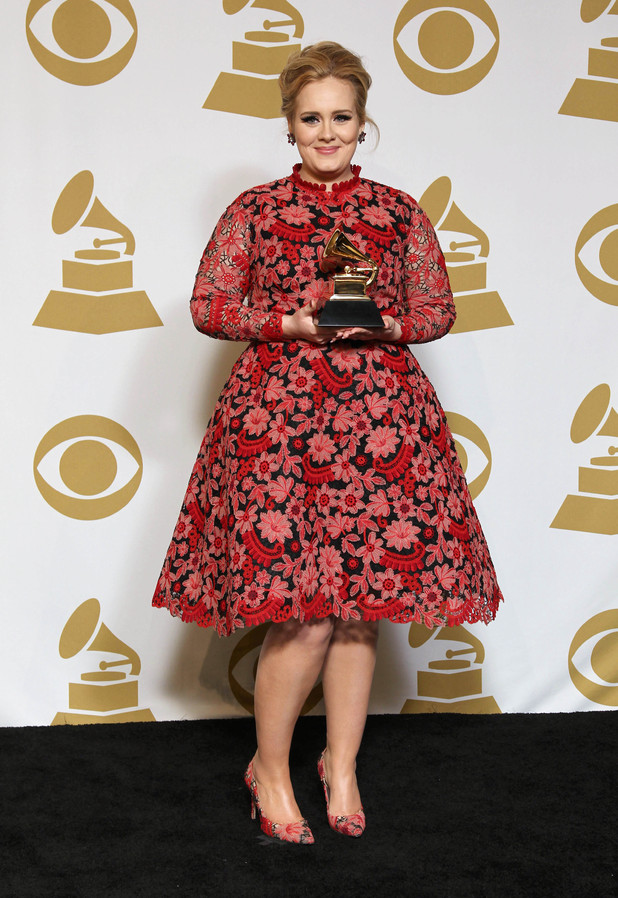
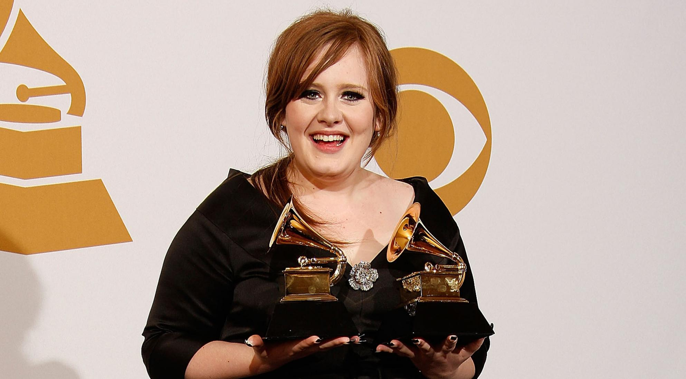
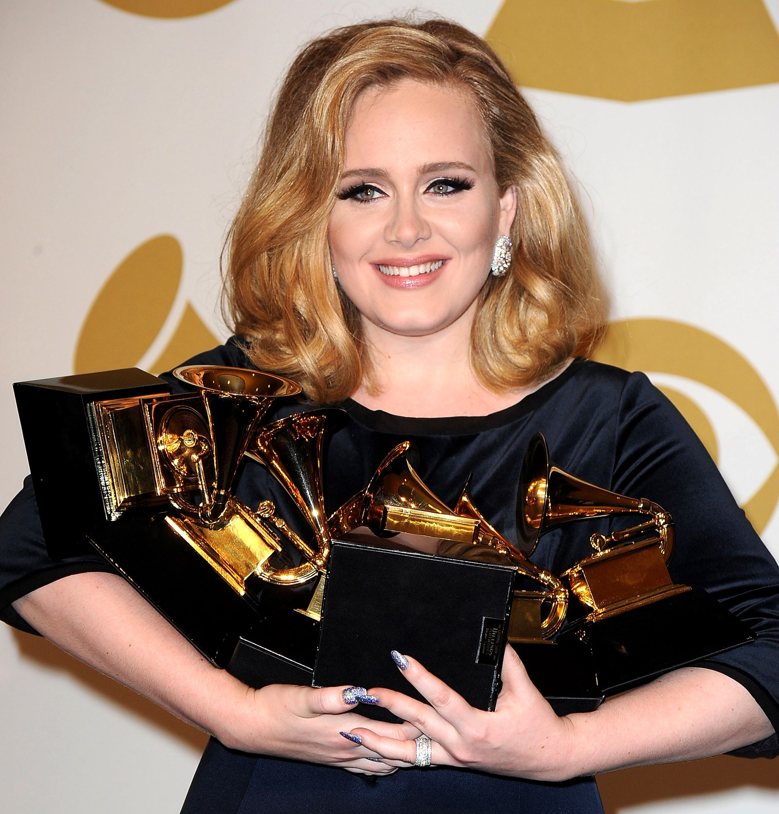
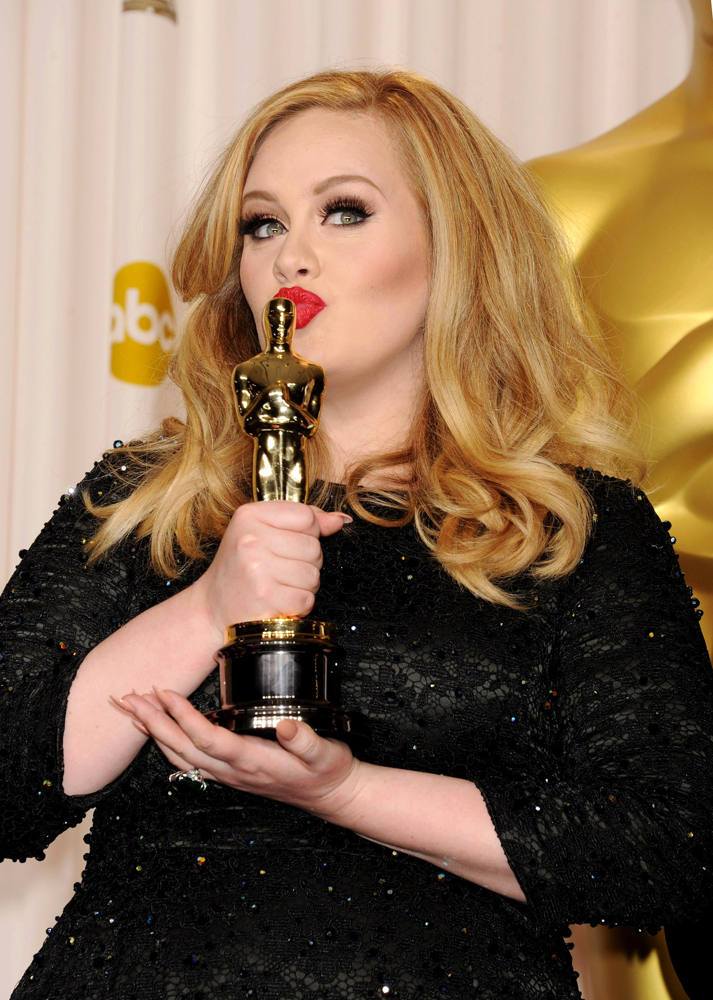

ADELE
Grammys
Adele tiene 18 nominaciones a los premios Grammy, de las cuales ha ganado 15. Ha sido la segunda mujer en ganar seis premios en una noche, luego de Beyoncé y seguida por Billie Eillish. La cantante británica ha sido la única artista en ganar en dos ocasiones seguidas las tres categorías más importantes.
De catorce nominaciones a los premios de los artistas más influyentes de la música en el Reino Unido, Adele ha ganado ocho.
-

Mejor Nuevo Artista
2009
-

Mejor Interpretación Vocal Femenina en Pop
2010
-

Álbum del Año, Mejor Álbum Vocal de Pop
Grabación del Año, Canción del Año, Mejor Video Musical
Mejor Interpretación Vocal Pop Solista
2012
-
Mejor Canción Escrita para un Medio Visual
2014
-

premio oscar
Por su canción original hecha para la película de James Bond, Skyfall (2012), Adele recibió un Premio de la Academia por Mejor Canción Original.
2012